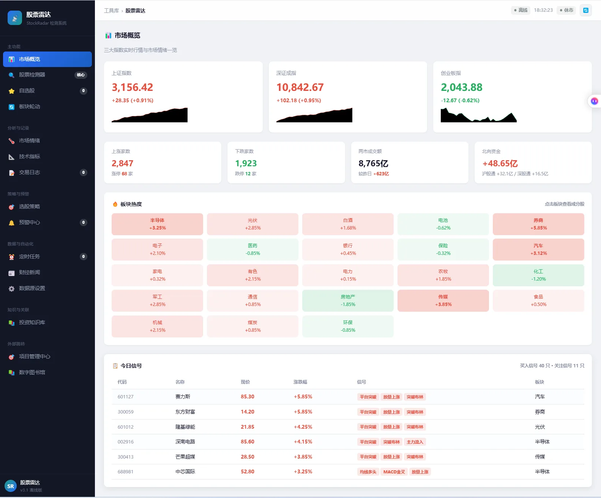

UI & Systems / PROJECT 06
股票雷达
股票雷达 · StockRadar
以市场概览为起点，组织指数、板块与个股信息，构建个人股票研究工作台。
- ROLE
- 个人系统与界面设计
- TIME
- 项目年份待确认
- TOOLS
- 设计工具清单未提供
- TYPE
- Personal system
- STATUS
- Private Prototype / Local Deployment

01 / OVERVIEW
Overview
「股票雷达」是我围绕个人股票研究与信息整理搭建的系统。界面以市场概览为入口，将指数走势、市场情绪、板块热度与个股信号分层呈现，并组织股票检测、自选股、技术指标和交易日志等模块，让不同维度的信息更容易浏览与对照。
02 / INTERFACE & INTERACTION
Interface & interaction
- 市场概览：用指数卡片、趋势图和市场摘要建立信息层级。
- 板块观察：通过红绿区分的板块热度矩阵呈现不同板块的变化。
- 个股信息：以表格组织股票名称、价格、涨跌幅、信号标签与所属板块。
- 研究入口：将自选股、技术指标、交易日志、选股策略与预警等模块分组导航。
03 / PROTOTYPE
Prototype
Private Prototype / Local Deployment。当前以已有界面截图说明设计，不提供未公开的原型服务。
04 / SCOPE & NEXT QUESTIONS
Scope & next questions
当前以已有界面材料说明个人系统的组织方式。截图不是对全部后台能力、外部数据实时性或生产环境稳定性的承诺。
个人研究与界面设计项目，不提供投资建议，不宣称策略收益。
CONTINUE EXPLORING